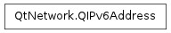

QIPv6Address ¶

Synopsis ¶
Functions ¶
- def __getitem__ ()
- def __len__ ()
- def __len__ ()
- def __setitem__ ()
- def operator[] (index)
Detailed Description ¶
- class PySide.QtNetwork. QIPv6Address ¶
- class PySide.QtNetwork. QIPv6Address ( QIPv6Address )
-
Parameters: QIPv6Address – PySide.QtNetwork.QIPv6Address
- PySide.QtNetwork.QIPv6Address. __getitem__ ( ) ¶
- PySide.QtNetwork.QIPv6Address. __len__ ( ) ¶
- PySide.QtNetwork.QIPv6Address. __len__ ( )
- PySide.QtNetwork.QIPv6Address. __setitem__ ( ) ¶
- PySide.QtNetwork.QIPv6Address.operator[](index)
-
Parameters: index – PySide.QtCore.int Return type: PySide.QtCore.quint8